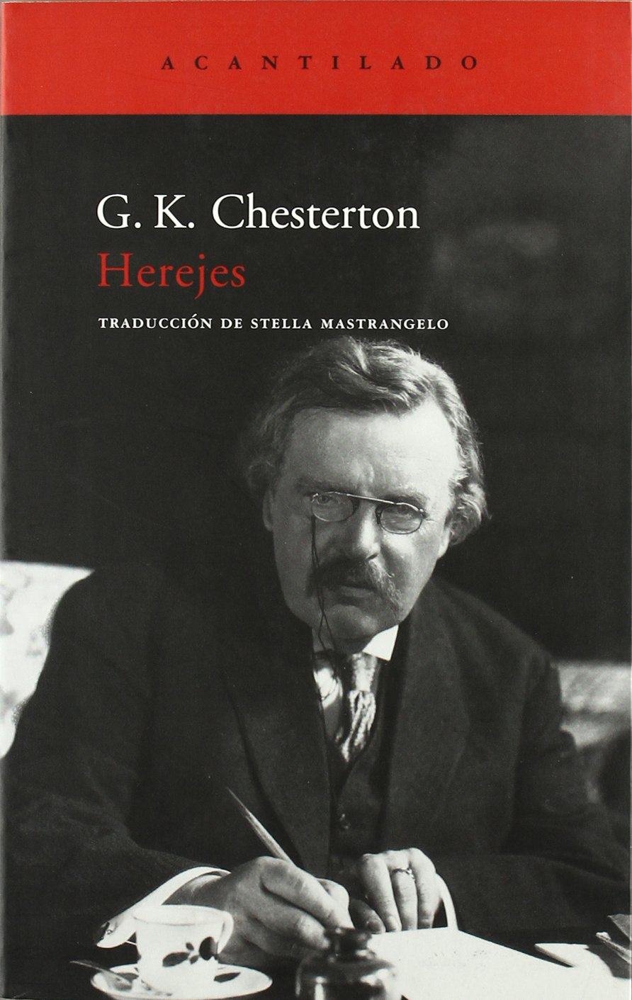

El Hereje
Miguel Delibes
En el año 1517, Martín Lutero fija sus noventa y cinco tesis contra las indulgencias en la iglesia
de Wittenberg, un acontecimiento que provocará el cisma de la Iglesia Romana de Occidente.
Ese mismo año nace en Valladolid Cipriano Salcedo. En un momento de agitación política y
religiosa, esta mera coincidencia de fechas marcará fatalmente su destino. Convertido en
próspero comerciante se pondrá en contacto con las corrientes protestantes que, de manera
clandestina, empezaban a introducirse en la Península, pero la difusión de este movimiento
será cortada progresivamente por el Santo Oficio.
A través de las peripecias vitales y espirituales de Cipriano Salcedo, Delibes dibuja con mano
maestra un vivísimo retrato del Valladolid de la época de Carlos V, de sus gentes, sus costumbres
y sus paisajes. Pero El hereje es sobre todo una indagación sobre las relaciones humanas
en todos sus aspectos; la historia de unos hombres y mujeres de carne y hueso en lucha consigo
mismos y con el mundo que les ha tocado vivir. Un canto apasionado por la tolerancia y la
libertad de conciencia, una novela inolvidable sobre las pasiones humanas y los resortes
que las mueven.
Hereje
G.K. Chesterton

En Herejes, G. K. Chesterton dibuja una personalísima crítica a las opiniones religiosas de nuestro
tiempo. Dirigido al sentido común del hombre común, singular no tanto por la estricta originalidad
de sus ideas, sino por su particular punto de vista, este libro de Chesterton nos conduce,
con una curiosa mezcla de humor y obstinación audaz, por los caminos de una excepcional contribución
a uno de los debates fundamentales del mundo contemporáneo.
En Herejes, G. K. Chesterton dibuja una personalísima crítica a las opiniones religiosas de nuestro
tiempo. Dirigido al sentido común del hombre común, singular no tanto por la estricta originalidad
de sus ideas, sino por su particular punto de vista, este libro de Chesterton nos conduce,
con una curiosa mezcla de humor y obstinación audaz, por los caminos de una excepcional contribución
a uno de los debates fundamentales del mundo contemporáneo.
Dirigido al sentido común del hombre común, singular no tanto por la estricta originalidad de
sus ideas, sino por su particular punto de vista, este libro de Chesterton nos conduce, con
una curiosa mezcla de humor y obstinación audaz, por los caminos de una excepcional contribución
a uno de los debates fundamentales del mundo contemporáneo.